Teoría 101
Computadores y Lenguajes
1 ¿Que es la informática?
- Procesamiento de información automática
- Información: Conjunto de datos numéricos, alfabéticos o alfanuméricos necesarios para plantear y resolver un problema
- Tratamiento de la información:
- Entrada: Introducción de los datos del problema
- Procesamiento: Transformación de datos
- Salida: Presentación de resultados
Datos y Procesos
1.1 La informática es ubicua
- PCs
- Supercomputadoras
- Smartphones
- Electrodomésticos
- Cajeros automáticos
- Consolas
- Robots
- …
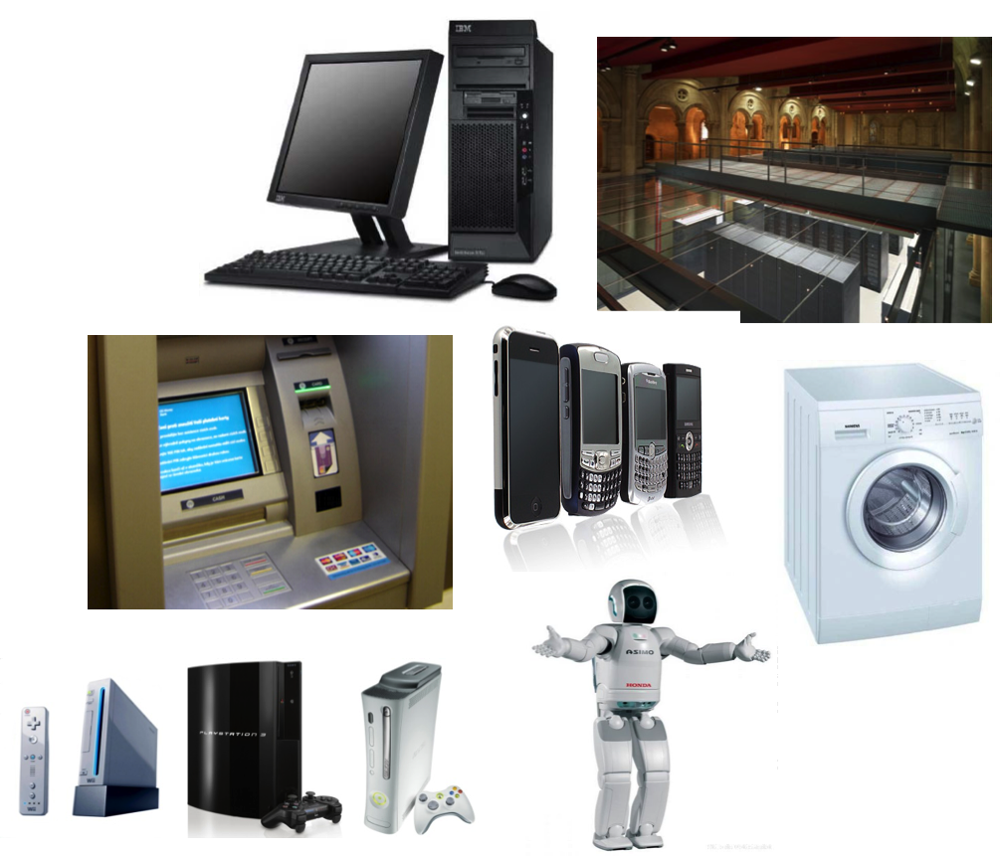
2 Historia de la Informática
2.1 300-500 a.C.: El Ábaco
- Primer dispositivo de cálculo conocido
- Utilizado para realizar operaciones básicas como suma y resta
- Base para el desarrollo de herramientas más complejas
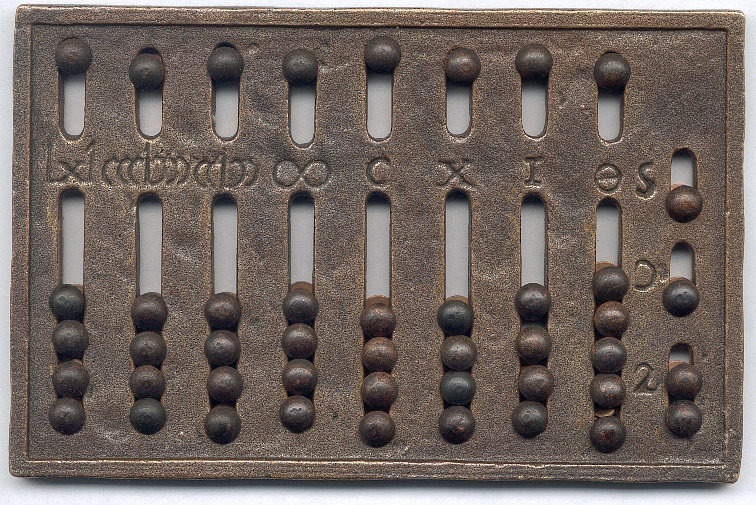
2.2 Siglo II a.C.: Máquina de Anticitera
- Primer mecanismo conocido de engranajes complejos
- Utilizado para predecir posiciones astronómicas y eclipses
- Introducción de conceptos de cálculo mecánico en la astronomía
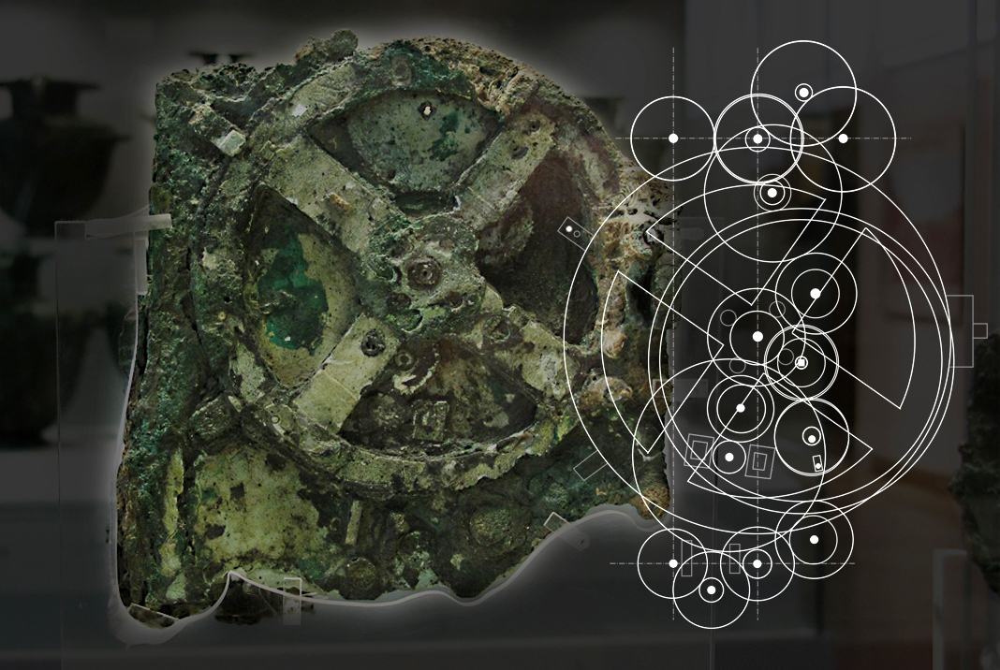
2.3 Siglos VIII-IX: Al-Juarismi
- Introdujo el álgebra en su obra “Al-Kitab al-Mukhtasar fi Hisab al-Jabr wal-Muqabala”
- Sentó las bases para los algoritmos y sistemas numéricos actuales.
- Desarrollo del sistema decimal y de técnicas de resolución de ecuaciones
2.4 Siglo XVII: La Pascalina de Blaise Pascal
- Primer calculador mecánico funcional
- Utilizaba ruedas dentadas para realizar sumas y restas
- Inspiró futuros dispositivos de cálculo automatizado
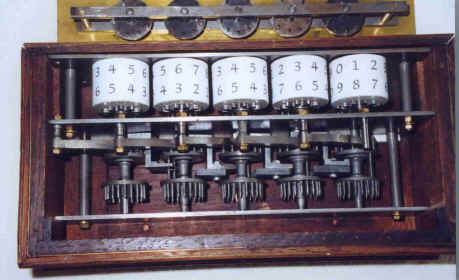
2.5 Siglo XIX: El Telar de Jacquard
- Introducción de tarjetas perforadas para controlar patrones en telares
- Base conceptual para la programación mediante instrucciones predefinidas
- Influencia directa en los diseños de máquinas computacionales posteriores


2.6 Década de 1830: La Máquina Analítica de Charles Babbage
- Primer diseño conceptual de un computador programable
- Incorporaba memoria, unidad aritmética y control por tarjetas perforadas
- Visionaria pero nunca construida completamente en su época
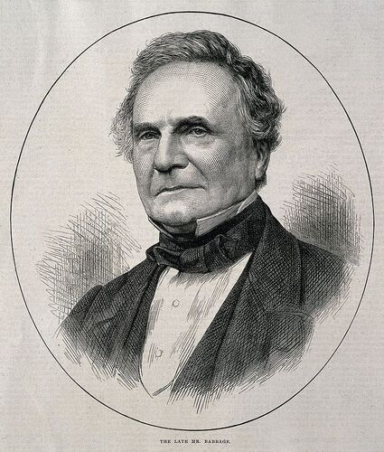
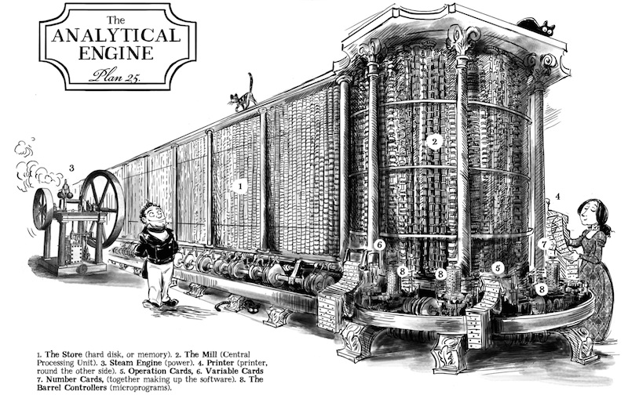
2.7 Década de 1840: Ada Lovelace
- Reconocida como la primera programadora
- Escribió el primer algoritmo diseñado para ejecutarse en la Máquina Analítica
- Identificó el potencial de las máquinas más allá del cálculo numérico
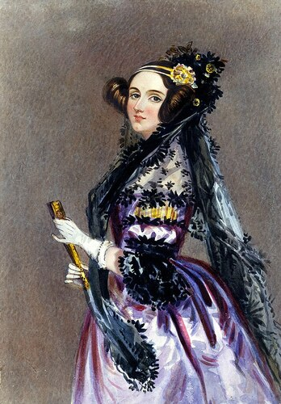
2.8 Década de 1940: Primera Generación de Computadoras
- Bombe
- Z3
- Colossus
2.9 1939-1940: Z3
- Diseñada por Konrad Zuse en 1941
- Primera computadora electromecánica programable
- Utilizaba relés electromeánicos
- Usada para ayudar en cálculos de ingeniería

2.10 1939-1940: Máquina Bombe
- Diseñada por Alan Turing y Gordon Welchman
- Compuradora electromecánica
- Usada para descifrar códigos de la máquina Enigma alemana
- No programable
- Probaba todas las posibles configuraciones de la máquina Enigma
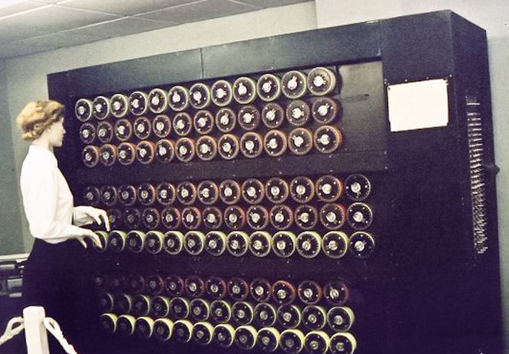
2.11 Década de 1943-1944: Colossus
- Diseñada por Tommy Flowers y el equipo de Bletchley Park
- Primera computadora digital electrónica
- Utilizaba tubos de vacío (muchísimo más rápidos que los relés)
- Usada para descifrar códigos de la máquina Lorenz alemana
- Ligeramente programable, pero no de propósito general

2.12 1945: ENIAC
- Primera computadora electrónica de propósito general
- Capaz de realizar 5,000 operaciones por segundo
- Usaba tubos de vacío, ocupaba una sala entera

2.13 Década de 1950: EDVAC
- Introducción del concepto de programa almacenado
- Evolución significativa respecto al ENIAC, más eficiente y versátil
- Datos y programas residían en la misma memoria
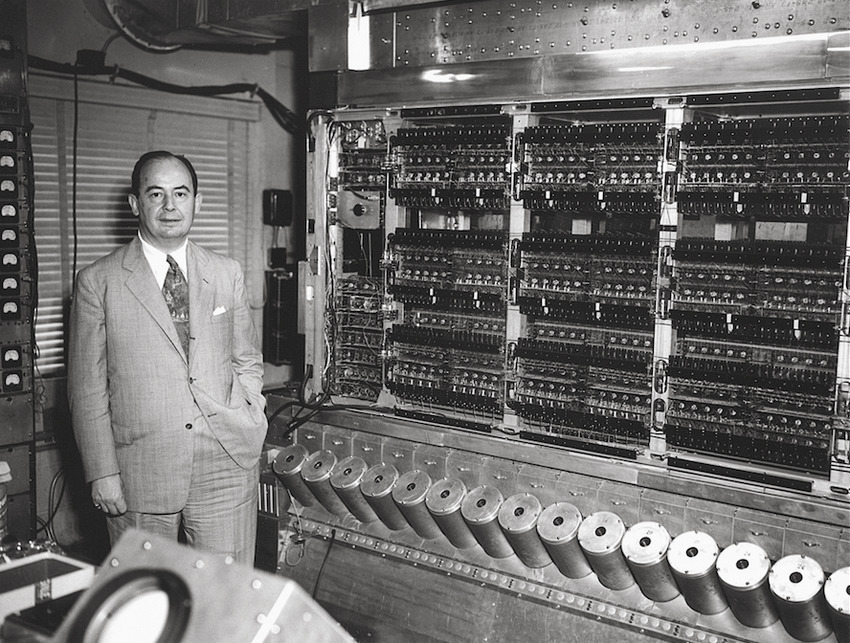
3 Hardware
3.1 Sistema Binario
- Unidades de información
- Bit: Dígito binario (0 o 1)
- Byte: Conjunto de 8 bits
- Base 2
2562 = 2*10^3 1101 = 1*2^3 = 1*8 = 8
+ 5*10^2 + 1*2^2 = 1*4 = 4
+ 6*10^1 + 0*2^1 = 0*2 = 0
+ 2*10^0 + 1*2^0 = 1*0 = 1
3.2 Representaciones en Sistema Binario
- Representación de datos
- Números: Representación binaria de números enteros y reales
- Texto: Codificación de caracteres mediante tablas de caracteres
- Imágenes: Representación de píxeles mediante valores numéricos
- Vídeo: Secuencia de imágenes
- Sonido: Representación de ondas sonoras mediante valores numéricos
3 = 1*2^1 + 1*2^0 = 11
33 = 1*2^5 + 1*2^0 = 100001
E (69) = 1*2^6 + 1*2^2+ 1*2^0 = 1000101
morado (RGB) = (2/3 rojo, 3/3 azul)
= (2,0,3) = (10,00,11) = 1000113.3 Modelo de Von Neumann
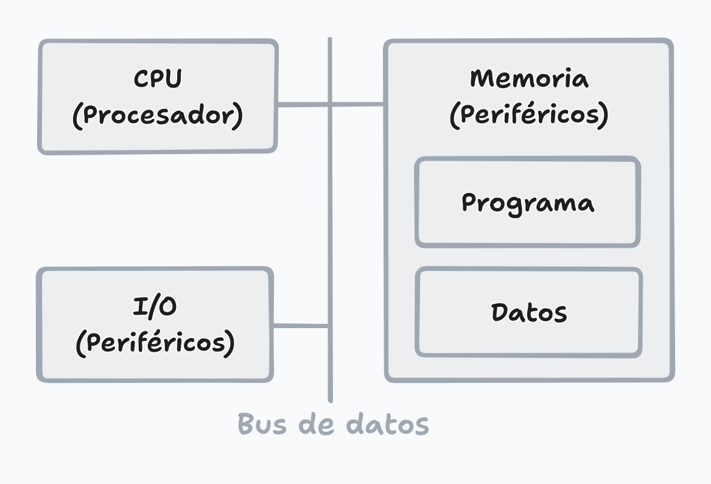
3.4 Partes de un Computador
- Procesador (CPU)
- Unidad de control (CU)
- Unidad aritmético-lógica (ALU)
- Memoria
- Gran velocidad de acceso
- RAM o ROM: Volátil o permanente
- Almacenamiento
- Disco duro, SSD, etc.
- Almacenamiento permanente
- Dispositivos de Entrada/Salida
- Periféricos para interactuar con la computadora
- Transferecia a través de buses de datos
- PCI, USB, etc.
3.5 Partes de un Computador
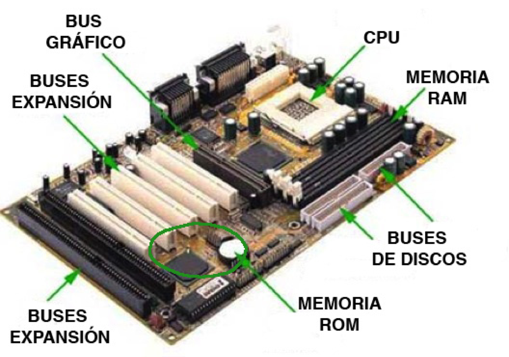
Destacar los paralelismos entre la máquina analítica de Babbage y los computadores actuales. Diferencias: - The Store: Memoria RAM o Disco - The Mill: CPU - The Steam engine: Fuente de alimentación - The Printer: Salida (dispositivos de salida) - Opetacion Cards, Variable Cards and Number Cards: Software
3.6 Jerarquía de Memoria
- Existen dos reglas fundamentales:
- A mayor capacidad, menor velocidad
- A mayor velocidad, mayor coste
- Por ello, se utilizan distintos tipos de memoria
- Registros: Memoria interna del procesador
- Memoria caché: Memoria de alta velocidad
- Memoria principal: Memoria RAM
- Memoria secundaria: Almacenamiento permanente
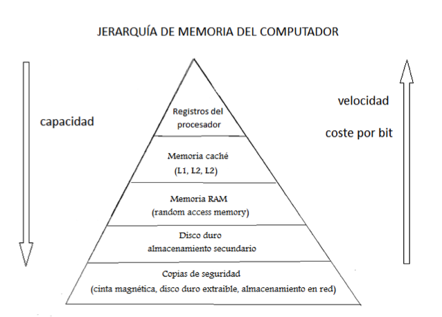
4 Software
4.1 Software
- La propiedad más valiosa de un computador es su capacidad para ejecutar distintos programas: programable
- Software: Conjunto de programas y datos que controlan el funcionamiento de un computador
- Un programa permite automatizar una tarea
- El software permite abstraer el hardware
- Un programa puede leer un fichero esté en un disco duro o en un USB
4.2 Clasificación del software
- Software de sistema: Controla el hardware y proporciona servicios a los programas de aplicación
- Sistemas operativos: Windows, Linux, macOS
- Controladores de dispositivos: Drivers
- Software de aplicación: Realiza tareas específicas para el usuario
- Ofimática: Microsoft Office, LibreOffice
- Multimedia: VLC, Photoshop
- Navegadores web: Chrome, Firefox
4.3 La abstracción en la informática
- Abstracción: Proceso de ocultar detalles de implementación y mostrar solo las características esenciales de un objeto
- Bajo nivel: Representación cercana al hardware
- Operaciones directas sobre la memoria
- Dependientes del hardware
- Alto nivel: Representación al problema
- Abstracciones como variables, objetos, funciones, etc.
- Portables entre distintos hardwares